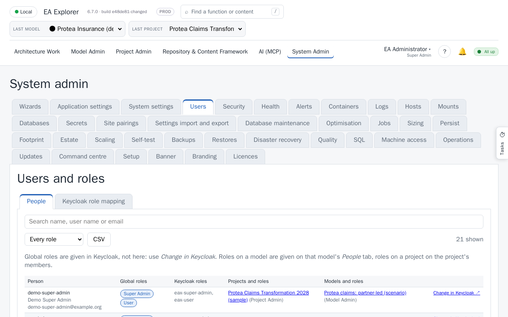

Add a person in Keycloak
For: System Admin
A person who can sign in to EA Explorer.

#/admin/usersWhy do this
EA Explorer does not keep its own passwords; it signs people in through Keycloak, which can also take people from your directory. A person added there can sign in, and then sees only what their roles allow. Usually this is done once per person, or not at all when the directory is connected. See Roles and access.
Access in EA Explorer is layered so each owner decides for their own part: System Admins for the installation, Model Admins for models, Project Admins for projects. Most people need only a few roles to do their work.
In TOGAF terms: The Preliminary phase's architecture capability: who does architecture work and with what authority. Sign-in itself is outside the method. See EA Explorer and the TOGAF Standard.
The goal: A person can sign in to EA Explorer.
Before you start You need the User Admin or Keycloak Admin role.
Steps
- Open System Admin › Users and roles, Open Keycloak.
- Users › Add user: user name, email, name; Create.
- Credentials: set a temporary password.